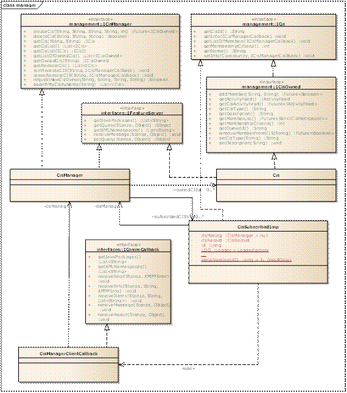

CIS Management
This section provides information regarding the use of the SOCIETIES CIS Manager facilities by Third Party context-aware services. The CIS Manager Cloud is the component used by the user to manage his own CISs and the CISs in which he is part of.
API Definition

The CIS Manager Component is delivered as a single bundle, exposing both server and client functionalities.
As depicted in Figure 26, there are four main interfaces that a Third Party service developer must be aware of:
- ICisManager: exposes the local methods (createCIS, deleteCIS, listSubscribedCIS, listOwnedCIs, ) and the remote methods (joinCIS and leaveCIS). This is the main interface that clients will use.
- ICis: exposes the methods on remote or local CISs (listMembers, getCisinfo), the implementation is different depending on the fact that the represented CIS is local or remote, but the method signatures are the same.
- ICisOwned: exposes methods on the owned (i.e. "local") CIS. It extends the ICis interface and adds methods which can be applied just to an owned CISs (addMember, removeMember).
- ICisManagerCallback: this is the callback interface for remote methods. At the moment, the data is encapsulated in an object of type org.societies.api.schema.cis.community.Community
Instances of the ICis interface are created the user joins a CIS, whilst instances of ICisOwned are created when the user creates his own CISs.
The CIS and CisManager Classes implement the IFeatureServer interface (see Section 10.1.3.1) which is required to asynchronously handle requests coming from both other peers, android clients or any other software component able to send and receive XMPP messages.
The CisManager uses the org.societies.cis.manager.CisManager.ICommMgr service provided by the CSS through dependency injection, whilst the ICisOwned instances use their own ICommMgr implementation, which is created on the fly when they are instantiated.
Technical Configuration
If you want to get the Cis Manager service injected in your service, you will have to add the following dependency on you project's Maven configuration file (i.e. pom.xml):
<dependency>
<groupId>org.societies.api.external</groupId>
<artifactId>societies-api</artifactId>
<version>${release.version}</version>
<scope>provided</scope>
</dependency>
Once the dependency is in place, you will be able to insert a reference in Spring's bundle-context-osgi.xml file (which, by SOCIETIES convention, holds all the OSGi-related bean settings):
<osgi:reference id="CisManagementBundle" interface="org.societies.api.cis.management.ICisManager"/>
Finally, the following bundles will have to be available in the Virgo instance that you will be running. Check that they are included in the Virgo plan:
<?xml version="1.0" encoding="UTF-8"?>
<plan name="org.societies.cismanagement.plan" version="3.0.0" scoped="false" atomic="false"
xmlns="http://www.eclipse.org/virgo/schema/plan"
xmlns:xsi="http://www.w3.org/2001/XMLSchema-instance"
xsi:schemaLocation="http://www.eclipse.org/virgo/schema/plan
http://www.eclipse.org/virgo/schema/plan/eclipse-virgo-plan.xsd">
<artifact type="bundle" name="org.societies.api.external.societies-api"/>
<artifact type="bundle" name="org.societies.api.internal.societies-api-internal"/>
<artifact type="bundle" name="org.societies.comm.xmpp.XCCommunicationMgr"/>
<artifact type="bundle" name="org.societies.data-source"/>
<!-- from services -->
<artifact type="bundle" name="org.societies.comm.xmpp.pubsub.PubsubServiceBundle"/>
<artifact type="bundle" name="org.societies.comm.xmpp.pubsub.PubsubClientBundle"/>
<artifact type="bundle" name="org.societies.platform.servicelifecycle.serviceRegistry"/>
<artifact type="bundle" name="org.societies.platform.servicelifecycle.serviceManagement"/>
<artifact type="bundle" name="org.societies.slm.SLMCommsManager"/>
<!-- from cis manager -->
<artifact type="bundle" name="org.societies.cis.CisDirectoryClient"/>
<artifact type="bundle" name="org.societies.cis.manager"/>
</plan>
Example projects are available to understand how to use the Cis Manager functionalities both from a Web App, and as an integration test project.